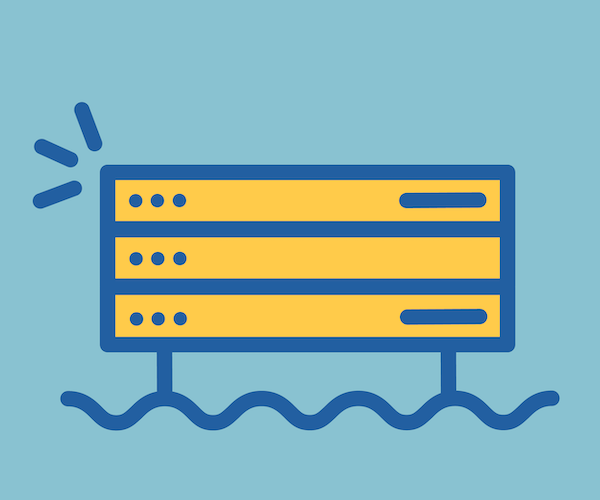

une école et un lieu unique pour des formations d'exellence aux métier du numérique
La Plateforme propose des formations adaptés à tous les profils
La Coding School: L’école du numérique ouverte à tous Avec ou sans bac, sans limite d’âge et totalement gratuite, la formation Coding School offre leur chance à ceux qui veulent faire du numérique leur avenir. La Coding School ce sont 2 ans dédiés à la formation aux métiers du web et du mobile, un titre reconnu par l’état, une année de spécialisation et un modèle pédagogique unique qui s’adapte aux besoins de chacun. cliqué ici
Ecole Centrale Digital Year: Le post-graduate d’excellence, dédié à l’IA Le diplôme post-graduate créé en collaboration avec l’Ecole Centrale de Marseille est un parcours d’excellence de formation à l’Intelligence Artificielle. Ouvert aux étudiants diplômés d’un BAC+5, ou en césure, ayant pour objectif de devenir des acteurs clés dans les métiers de haute technologie. cliqué ici
Préparez vous aux métiers de l’informatique qui recrutent L’école La Plateforme_ vous ouvre les portes de formations inédites. Coding School, Digital Lab ou Executive Education, La Plateforme Marseille vous prépare à tous les métiers, du web, de l’IA, du numérique, de l’informatique. cliqué ici
Executive Education : Se former aux métiers des nouvelles technologies pour aller plus loin dans sa carrière Des formations continues destinées aux cadres et aux décideurs souhaitant monter en compétences sur les domaines IT, et plus particulièrement l’IA. En formule ou à la carte pour s’adapter au mieux aux besoins des entreprises.
Préparez vous aux métiers de l’informatique qui recrutent L’école La Plateforme_ vous ouvre les portes de formations inédites. Coding School, Digital Lab ou Executive Education, La Plateforme Marseille vous prépare à tous les métiers, du web, de l’IA, du numérique, de l’informatique.